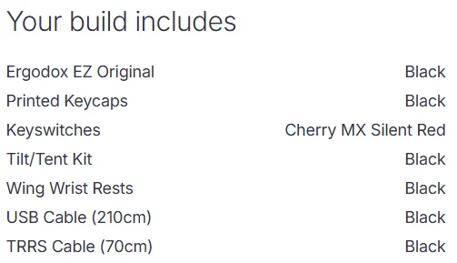

A curated personal list of links, books, tools, and references I've found genuinely useful.
Jump to a topic below - or scroll through.
Roadmap.sh step-by-step learning paths with resources for almost every field
Udemy courses are almost always on sale, plenty of free material too
General game dev knowledge roadmap
Curated list of mind-expanding books
Awesome lists curated lists on every topic imaginable
Coding Interview University multi-month study plan for software engineers
Belgian AI (waffle) NPC attack management systems
Programming books in many languages (free)
My personal library of PDFs & ebooks
Effective C++ (3rd Ed.)
Pro Git (2nd Ed.)
Refactoring: Improving Existing Code
Reversing: Secrets of Reverse Engineering
Real World Maintainable Software
Game Physics The Rest of Your Life
Real-Time Collision Detection by Christer Ericson
Deep / Machine Learning & AI books
Learn X in Y Minutes quick-start syntax guides for any language
Build Your Own X implement Redis, Git, Docker, etc... from scratch
Data Context Interaction pattern
MagicTools massive list of game development tools and frameworks
The Art of Game Design by Jesse Schell
Introduction to Game Design, Prototyping, and Development
Masahiro Sakurai on Creating Games (YouTube channel)
Iwata Asks Satoru Iwata interviews Nintendo developers
Psychology of Games by Celia Hodent
Josh's Handle algorithms & maths explained clearly (helped me understand raytracing)
Freya Holmer tech art, maths, game dev
Quaternion talk by Freya Holmer very interesting.
Understanding Quaternions (article)
Understanding Quaternions (video)
Lisyarus blog maths, simulation, graphics, game dev
Efficient AABB vs Ray collision algorithms
Argonaut Code maths & algorithms well explained
PardCode 3D Engine in C++ tutorial series
Learn OpenGL comprehensive OpenGL tutorial site
Game engine resources (PDFs & notes)
Ray Tracing in One Weekend series Peter Shirley
Physically Based Rendering: From Theory to Implementation (PBR Book, 4th ed.)
Sebastian Lague C++ rendering & simulations
EA's Journey with Texture Pipelines by Martin Palko (GDC 2025)
DirectX game development (Microsoft)
Introduction to 3D Game Programming with DirectX 12 by Frank Luna
Game Engine Black Book: DOOM by Fabien Sanglard
rtdoom DOOM rendered in C++
Rick Banks — Houdini tutorials (English)
Laurent Letz — Houdini tutorials (French)
Catlike Coding Godot tutorials
Awesome Godot free games, plugins, add-ons and scripts
All Godot Nodes Explained (Godot 4)
Miya's UE Notes, the most comprehensive community documentation on UE by Miya Loustalot
Ari's UE Notes, learnings, cheat sheets, tips & tricks by Ari Arnbjörnsson
Unreal Garden Unreal Engine learning community
Unreal Engine asset naming conventions
CorebGames Unreal Engine effects
Ryan Laley Unreal Engine tutorials
Catlike Coding Unity tutorials
EPFL doctoral MOOC catalogue
Stanford free online content
Academic Earth curated university lectures
Code Guide HTML & CSS best practices
UI Verse CSS component templates
MDN Web Docs HTML reference
PageSpeed Insights site performance analysis
Figma layout design
WebAIM accessibility for websites
ToWebP convert images to WebP format
Make Your Blog Suck Less by Scott Hanselman
Efficient Linux Command Line (not free ~30€)
GDC Sound Bank free professional audio assets
Framework Laptop (modular, repairable, powerful, ~1,400 ~ 4,300 €)
Vertical Mouse (~90 €) or Trackpad (~55~170 €), I recommend the vertical mouse.
ErgoDox EZ split keyboard (~325 € with the build I use), or build your own for under 30 € with some soldering: DIY guide

External SSD (~40 €) with an NVMe M.2 enclosure (~35 €)
or you could have a NAS (~ 330 €)
with Hard drive either:
Seagate Ironwolf (~425 €)
or
WD Red Plus (~395 €)
(each of these are for 12TB; getting 2 plus the NAS would come up to ~1,120~1,180 €)
Marshall Major IV Headphones (~77~150 €)
Comfy office chair with lumbar support (~170~450 €)
Standing desk (~115~300 €, IKEA countertop + sturdy legs is a solid budget option)
3D Printers (~350~1,100 €), I recommend Prusa and Creality.